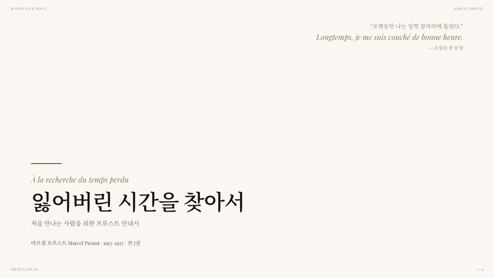
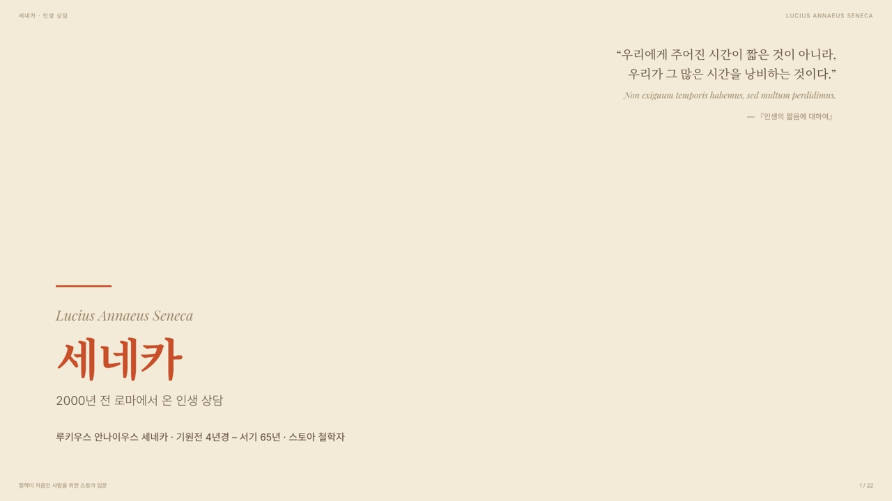
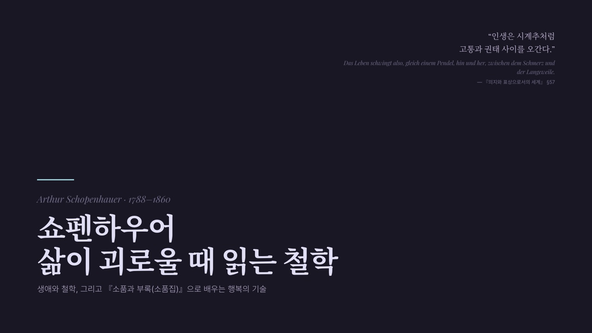
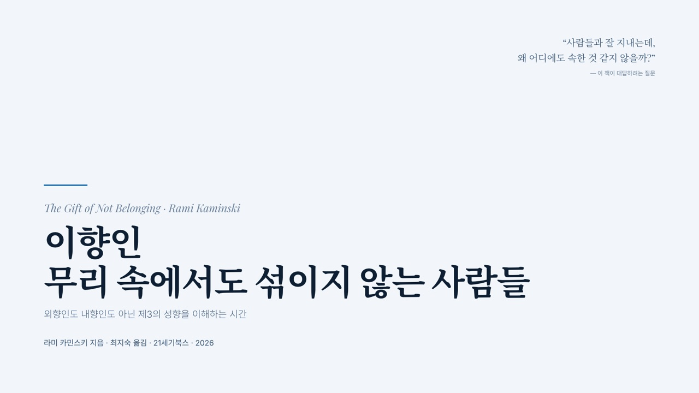
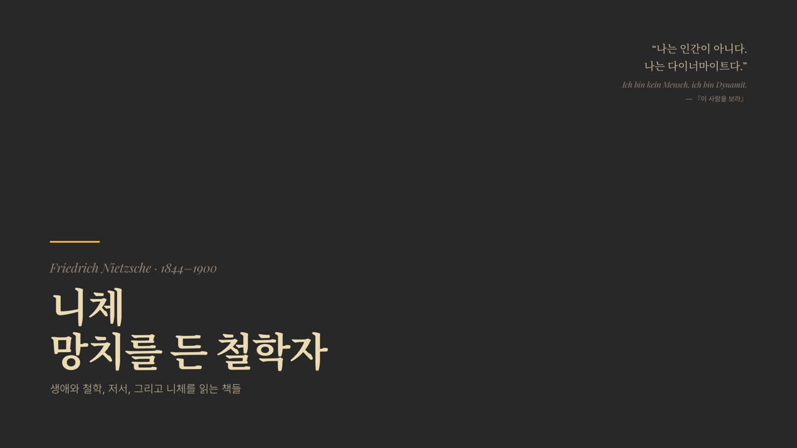
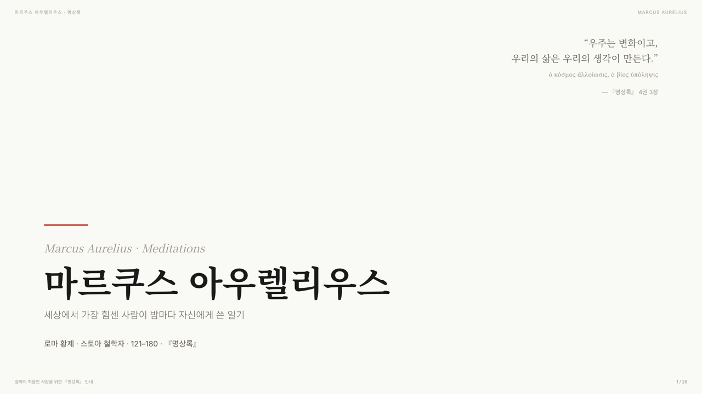
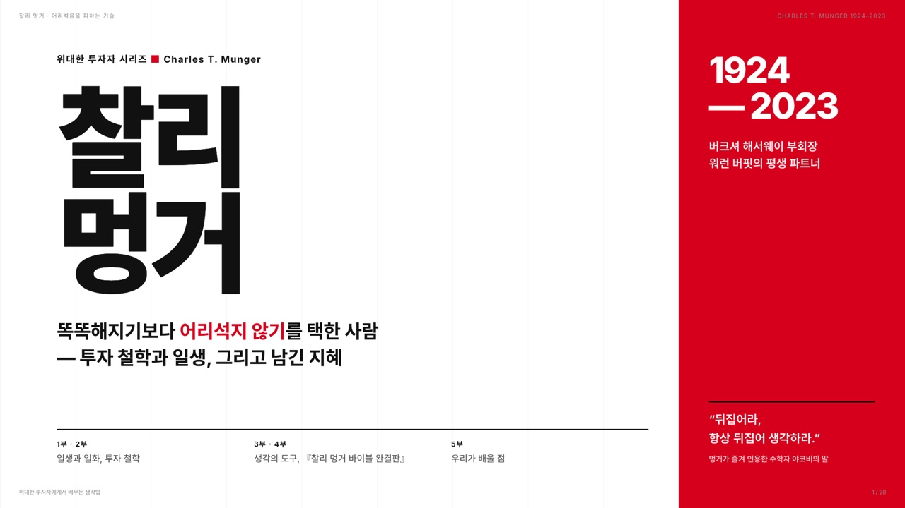

Claude Code × html-ppt 스킬 · 초보자 안내
코딩 없이, 말로 만드는
HTML 발표자료
설치부터 만들기, 확인, 웹에 올리기, 보관함 다듬기까지
직접 공부하고 부딪치며 해 본 과정을 그대로 보여 드립니다.
결과부터 보여 드릴게요
지금까지 만든 발표자료 8편

editorial-serif10장
midcentury
rose-pine
arctic-cool
gruvbox-dark
japanese-minimal
swiss-grid오늘의 순서
다섯 단계로 따라가 봅니다
준비하기
Claude Code에
스킬 설치
만들기
말로 부탁하고
세 가지 고르기
확인하기
화면으로 보고
사실 점검
올리기
GitHub에 올려
주소로 열기
다듬기
보관함 사이트
디자인·브랜드
단계마다 무엇을 했는지, Claude에게 뭐라고 말했는지, 어디서 막혔는지를 함께 보여 드립니다.
시작 전에
먼저 알아 둘 말 여섯 개
왜 HTML일까요?
파워포인트 대신 웹 페이지로 만든 이유
| 비교 | 파워포인트 파일 | HTML 슬라이드 |
|---|---|---|
| 여는 방법 | 프로그램이 깔려 있어야 함 | 브라우저만 있으면 됨 (PC·태블릿·휴대폰) |
| 나눠 주기 | 파일을 메일·메신저로 전송 | 인터넷 주소 하나로 공유 |
| 발표 대본 | 메모 칸에 따로 작성 | 장마다 대본 내장, S 키로 발표자 창 |
| 디자인 바꾸기 | 장마다 손으로 수정 | 테마 파일 하나만 바꾸면 전체가 바뀜 |
| AI와 함께 작업 | 파일 구조가 복잡함 | 글자로 된 파일이라 Claude가 읽고 고치기 쉬움 |
01
준비하기
발표자료를 만드는 스킬을 Claude Code에 설치합니다.
여기서 한 일은 영상 하나를 보여 주고 “설치해 줘”라고 말한 것이에요.
01 준비하기
설치도 말 한마디로 시작했어요
01 준비하기
설치한 도구는 이렇게 세 가지
html-ppt 스킬
이번 작업의 주인공. 원작자 lewis의 스킬을 한국 사용자가 한글 글꼴과 한국어 요청에 맞게 고친 판입니다.
MIT 라이선스 · 무료frontend-slides 플러그인
또 다른 HTML 발표자료 도구. 기존 PPT를 HTML로 바꾸거나 PDF로 내보낼 때 씁니다.
함께 설치Chrome · Chromium
사람 없이 돌아가는 브라우저. 완성한 슬라이드를 사진으로 찍어 검수하는 데 씁니다.
확인용01 준비하기
html-ppt 스킬 안에는 재료가 가득해요
그래서 Claude는 빈 종이에서 시작하지 않아요. 견본 틀을 골라 내용만 갈아 끼우는 방식으로 만듭니다.
01 준비하기 · 막혔던 곳
설치가 멈췄을 때는 그냥 물어보세요
상황Chromium 다운로드가 두 번이나 중간에 멈춤
→내가 한 말“다운로드 예상 시간은?” “아직도 완료가 안됐나요?”
Claude가 찾은 원인압축을 푸는 단계에서 멈춤. 오래된 도구 판이 최신 맥과 잘 안 맞았음
→해결멈춘 작업과 받다 만 파일을 지우고, 최신 판으로 다시 설치한 뒤 실제 실행까지 확인
덤“내 맥북에서도 똑같이 하고 싶어요”
→결과겪은 문제의 해결책까지 넣은 설치용 문장을 만들어 줘서, 맥북에 그대로 붙여 넣으면 됨
02
만들기
/html-ppt 뒤에 만들고 싶은 내용을 적으면 시작됩니다.
Claude가 몇 가지를 묻고, 나는 고르기만 하면 돼요.
02 만들기
이렇게 부탁했어요 — 좋은 요청의 네 가지
/html-ppt 로마시대의 인물 세네카가 남긴 철학이나 저서의 내용, 핵심 가치나 문장들을 정리해서 소개하는 발표 슬라이드를 만들고 싶습니다. 가능하면 인물에 대한 소개도 좋습니다. 철학을 어려워하는 성인들도 쉽게 이해하도록 제작해 주세요. 완성된 슬라이드는 이전처럼 내 깃허브에 올리고 보관함에서 확인할 수 있도록 해 주세요.- 무엇을주제와 담을 내용
- 누구에게듣는 사람의 눈높이
- 얼마나분량 (예: 20장 이상)
- 그다음은완성 후 어디에 둘지
02 만들기
바로 만들지 않고 먼저 물어봐요
02 만들기
테마는 내용의 분위기에 맞춰 골라요
| 발표자료 | 고른 테마 | 왜 어울렸나 |
|---|---|---|
| 프루스트 소설 | editorial-serif | 책 지면 같은 명조 글꼴과 여백 |
| 세네카 | midcentury | 오래된 종이 같은 따뜻한 색감 |
| 마르쿠스 아우렐리우스 | japanese-minimal | 『명상록』처럼 고요하고 단정한 화면 |
| 니체 | gruvbox-dark | ‘망치를 든 철학자’에 맞는 어둡고 강한 대비 |
| 찰리 멍거 | swiss-grid | 숫자와 표가 많은 투자 이야기에 맞는 격자와 빨강 |
발표 중에도 T 키를 누르면 다른 테마를 바로 입혀 볼 수 있어요.
02 만들기
장마다 발표 대본이 숨어 있어요
- 대본은 화면에 보이지 않게 슬라이드 안에 숨겨 둡니다.
- S 키를 누르면 발표자 창이 따로 열려요.
- 지금 장 · 다음 장 · 대본 · 타이머가 한 화면에.
- 대본은 말하듯 써 달라고 하면 읽기 편해요.

03
확인하기
AI가 만든 결과는 꼭 확인해야 해요.
화면이 잘 나오는지, 그리고 내용이 사실인지.
03 확인하기 · 막혔던 곳
“전혀 슬라이드가 보이지 않아요”
상황첫 발표자료를 열었는데 화면이 텅 비어 있음
→원인미리보기 창이 파일을 그림처럼만 보여 줘서, 슬라이드를 켜는 스크립트가 돌지 않았음
해결 1내 컴퓨터 안에 작은 웹서버를 띄워서 열기
→결과정상으로 보임. 다음부터 같은 방법으로 열리게 설정까지 저장
해결 2창이 작으면 글자가 겹치고 넘침
→결과1920×1080 무대를 창 크기에 맞춰 비율 그대로 줄이고 키우게 바꿈
03 확인하기
Claude가 한 장씩 사진을 찍어 검사해요
한글이 중간에 끊김
‘발표/자료’처럼 단어 가운데서 줄이 바뀌던 것을 단어 단위 줄바꿈으로
글자가 너무 작음
큰 화면 기준으로 본문 글자 크기를 키움
숫자와 글이 겹침
큰 숫자가 설명 글을 덮던 자리를 바로잡음
03 확인하기
내용은 출처로 확인한 것만 싣기
부탁할 때
찰리 멍거 때 “책 내용은 웹에서 확인한 사실만 쓰라”고 지시. Claude가 서점·출판사 페이지를 찾아 읽고 만듦
다 만든 뒤
서점 페이지와 다시 대조. 출간일·쪽수·저자 소개는 맞았지만, 문구 두 곳이 원문과 다르거나 찾을 수 없었음
고친 방법
원문 그대로 바꾸고, 책에 없는 말은 누구의 말인지 분명히. 확인 못 한 세부 내용은 아예 빼기
숫자도 다시 계산해 보세요. 그럴듯한 “12.6배”가 실제로는 12.54배였던 적도 있어요.
03 확인하기
발표할 때는 키 몇 개만 기억하세요
넘기기스페이스바도 됩니다
전체 화면프로젝터에 띄울 때
발표자 창대본·다음 장·타이머
전체 보기모든 장을 한눈에, 눌러서 이동
대본 서랍화면 아래에 대본만 살짝
테마 바꾸기다른 옷을 입혀 보기
닫기열린 창을 모두 닫기
장 바로가기주소 끝에 #/5 → 5번째 장
04 올리기
GitHub에 올리면 주소 하나로 어디서든
04 올리기
두 번째부터는 “깃허브에 올려 줘” 한마디
1
폴더에 넣기
발표자료마다 폴더 하나. 테마·스크립트 같은 공용 파일은 함께 씁니다.
decks/charlie-munger/index.html2
목록에 한 줄
제목·소개·주제·날짜를 목록 파일 맨 위에 적고, 스크립트를 한 번 돌리면 표지·목록·장수가 자동으로.
decks.json → build.py3
올리기
바뀐 내용을 기록하고(커밋) GitHub에 올리면(푸시) 1~2분 뒤 사이트에 반영.
커밋 · 푸시이 순서는 Claude가 기억해 두기 때문에, 저는 매번 설명하지 않아요.
05 다듬기
디자인 스킬로 보관함 사이트를 점검했어요
점검design-taste-frontend 스킬
- “taste 스킬 기준으로 다듬어 줄 수 있나요?”
- 첫 측정: FAIL 5개, 경고 6개 → 고친 뒤 FAIL 0개
- “객관적으로 평가해 보고 개선할 점을 알려 주세요”
- 발표자료가 40편이라고 가정한 시험 페이지로 미리 점검
개선쌓여도 찾기 쉽게
- 검색창과 주제 버튼(철학·문학·심리·AI·투자)
- 학기별로 묶어 보기
- 발표자료에서 목록으로 돌아가는 링크
- 카카오톡에 주소를 붙이면 뜨는 공유 그림
05 다듬기
내 브랜드를 입히고, 일은 나눠서
브랜드 입히기
유튜브 프로필의 원고지 칸 ‘정♥’ 로고와 색을 사이트 전체에
별도 세션
긴 작업은 다른 대화창에 맡겨 동시에. 찰리 멍거 발표자료가 이렇게 만들어졌어요
기억
“한국어로만 답해 줘”, 올리는 순서 같은 것을 다음 대화에도 기억
이어가기
대화가 길어지면 요약 메모를 남기고 새 대화에서 이어서
마치며 · 처음 해 보는 분께
잘 만드는 비결은
잘 묻고, 꼭 확인하는 것.
/html-ppt (주제)를 (듣는 사람)도 이해하기 쉽게 (분량)장으로 만들어 주세요. 장마다 말하듯 쓴 발표 대본을 넣고, 내용은 출처로 확인한 사실만 써 주세요. 다 만들면 모든 장을 찍어서 확인해 주세요.